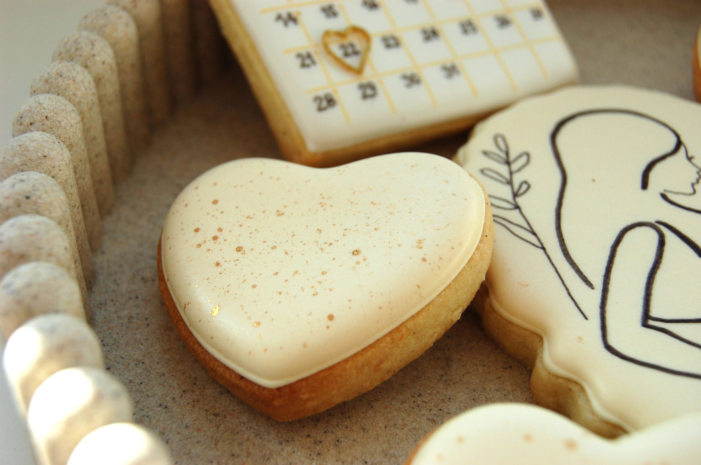
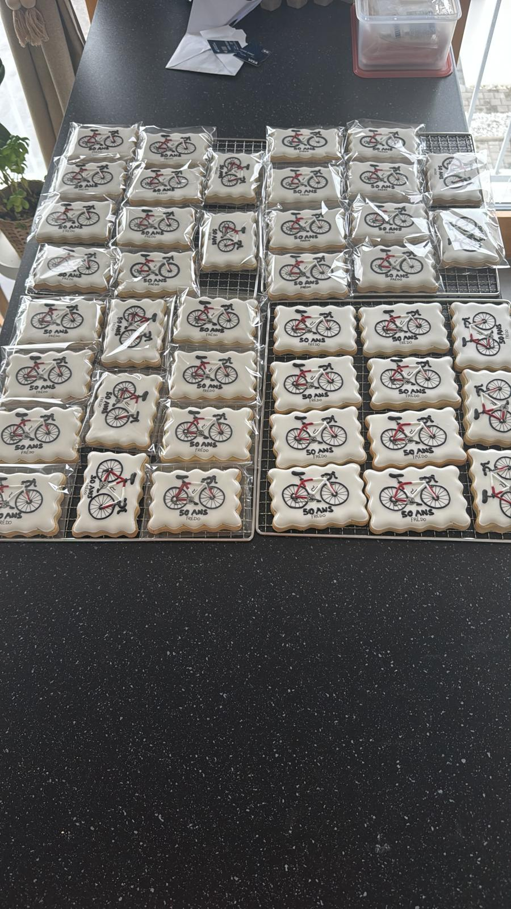
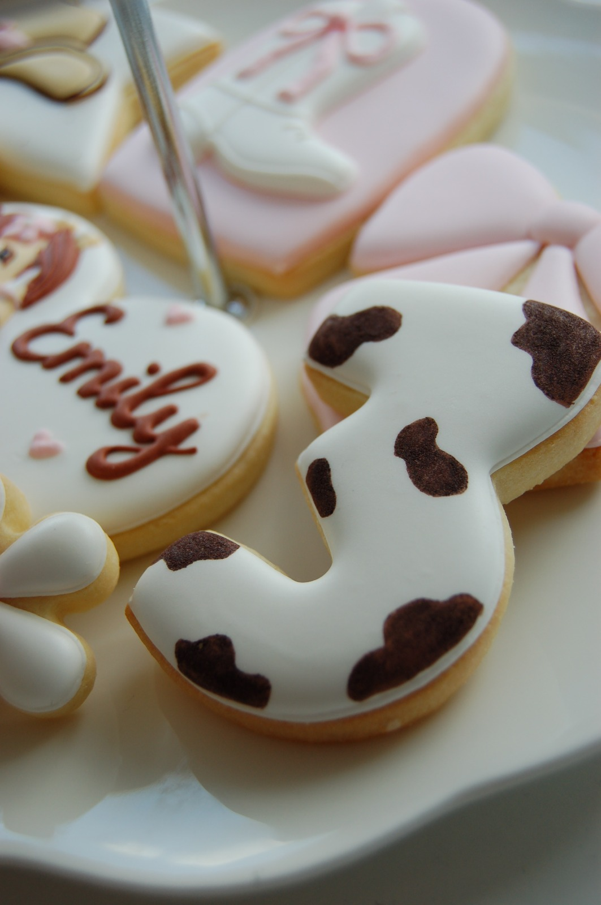

Biscuits personnalisés, décorés un par un
Des biscuits sablés décorés à la main au glaçage royal, un par un, dans mon atelier du canton de Fribourg. Pour un anniversaire, un baptême, une naissance, un mariage ou un événement d’entreprise.
Saison en cours
Les biscuits décorés que je prépare en ce moment. Leurs modèles et leurs tarifs se découvrent dans la galerie, avec toutes mes autres collections.


Découvrir mes réalisations pour voir les vingt et une collections, leurs modèles et leurs prix.
Comment sont créés mes biscuits ?
Tout se fait à la main, dans mon atelier du canton de Fribourg. Aucun biscuit décoré n’est fabriqué en série : chaque commande suit les mêmes six étapes, de la pâte au sachet.
-
01
Préparation de la pâte
Beurre, farine, sucre glace, œuf, sel de Guérande et vanille. La pâte repose au frais avant d’être abaissée : c’est ce repos qui donne au biscuit sablé sa tenue et des bords nets.
-
02
Découpe des biscuits
Chaque forme est découpée une par une, à l’emporte-pièce ou au gabarit dessiné pour l’occasion. C’est là que naissent les silhouettes sur mesure : un chiffre, un prénom, un animal, un logo.
-

03Cuisson
Les biscuits cuisent juste ce qu’il faut pour rester tendres au centre, puis refroidissent complètement sur grille. Un biscuit encore tiède ferait fondre le glaçage.
-
 04
04Décoration à la main
Le glaçage royal est monté, coloré et mis en poche teinte par teinte. Les contours d’abord, le remplissage ensuite, puis un séchage de plusieurs heures avant les détails et les reliefs. Un biscuit décoré demande souvent deux jours.
-
 05
05Personnalisation
Prénom, âge, date, initiale ou petit message : l’écriture se fait à main levée, au dernier moment, pour que chaque biscuit porte exactement les mots que vous avez choisis.
-

06Emballage et préparation de la commande
Chaque biscuit est glissé dans son sachet individuel, puis la commande est rangée pour le retrait dans le canton de Fribourg ou pour l’expédition en Suisse, en France et en Europe.
Ingrédients & conservation
Biscuit
Beurre, farine, sucre glace, œuf, sel de Guérande, extrait de vanille.
Glaçage
Sucre glace, poudre de blanc d’œuf (peut contenir des traces de lait et de fruits à coque), colorant alimentaire.
Conservation
- À consommer dans les 6 semaines dans son sachet d’origine.
- À conserver dans un endroit sec, à l’abri de la lumière et de l’humidité.
Ne pas mettre au réfrigérateur.
L’humidité ferait perdre au glaçage sa tenue et son éclat.Vous souhaitez découvrir d’autres créations ?
Au-delà des collections de saison, je décore des biscuits personnalisés pour les anniversaires, les baptêmes, les naissances, les mariages et les entreprises. La galerie rassemble mes créations déjà réalisées, classées par occasion et par thème — océan, licorne, cheval, chantier, Italie, moto et bien d’autres.
De quoi trouver l’idée de votre prochaine commande, ou m’en confier une toute nouvelle.
Découvrir mes réalisations


Elles en parlent
Quelques mots de celles et ceux qui ont choisi Jolie Création pour leurs moments précieux.
Des biscuits magnifiques et délicieux, qui ont eu beaucoup de succès. Merci encore pour cette belle commande.
Une commande dans les teintes pastel, exactement comme je l'imaginais. Le résultat était parfait et mes invités ont adoré.
Des biscuits qui reflètent parfaitement notre logo et nos origines. Chaque création était un joli souvenir, et une belle gourmandise.
Une création formidable pour notre anniversaire. Des biscuits originaux et très beaux, qui ont rendu la soirée encore plus douce.
Des biscuits aussi beaux que bons, qui ont fait leur effet à l'anniversaire. Tout le monde a adoré le concept.
De magnifiques biscuits pour le baptême de mon fils. Une création raffinée, un emballage très soigné, un résultat à la hauteur de nos attentes.
Les biscuits de l'anniversaire d'Elio ont eu beaucoup de succès. Aussi beaux que bons, et parfaitement dans le thème souhaité.
Des biscuits très réussis, aussi bons que beaux. L'emballage était particulièrement soigné.
Des biscuits à votre image
Décrivez-moi votre occasion, vos couleurs et le nombre de biscuits souhaité : je reviens vers vous avec une proposition sur mesure. Pour un événement qui mérite aussi un décor, découvrez mes micro-scénographies.